Data Science for Electron Microscopy
Week 4: Regression, optimisation & honest validation
FAU Erlangen-Nürnberg
Institute of Micro- and Nanostructure Research


Three numbers you will understand today
Week 3: least squares is a projection. Today: what “best fit” means, how a computer finds it, and when you may trust it. Every example is real data.
0.47 %
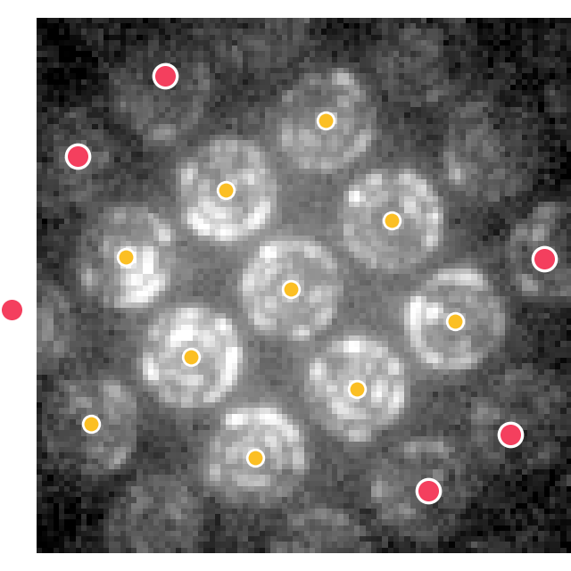
fake strain from 6 misdetected disks (red) when the lattice fit uses the squared error
→ Act 1 · Loss
3·10⁶
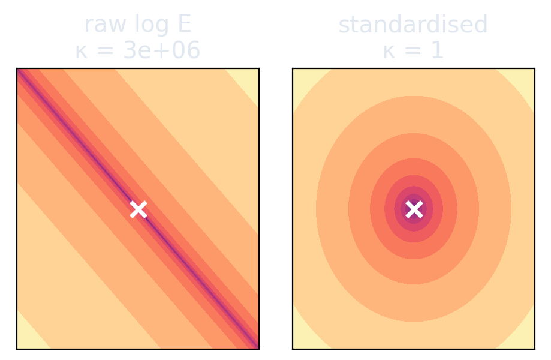
condition number of a background fit with raw log E. Gradient descent does not arrive.
→ Act 2 · Descend
0.50 → −0.12
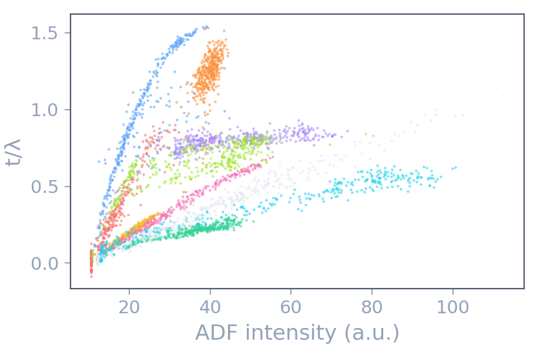
R² of the same model: random pixels versus new specimens
→ Act 6 · Validate
Today’s red line: from a fit to a prediction you can trust
Every regression is five choices
| EM task | Input \(\mathbf x\) | Target \(y\) | Model \(f(\mathbf x;\mathbf w)\) |
|---|---|---|---|
| EELS background | energy loss \(E\) | counts \(I(E)\) | power law \(A\,E^{-r}\) |
| Strain from 4D-STEM | disk index \((h,k)\) | disk position | lattice \(\mathbf c+h\,\mathbf g_1+k\,\mathbf g_2\) |
| Fe oxidation state | three reference spectra | pixel spectrum | \(\sum_k w_k\,\mathrm{ref}_k\) |
| Element identification | 78 line patterns | EDS spectrum | sparse \(\sum_k w_k\,\mathrm{pattern}_k\) |
| Thickness from ADF | ADF intensity, \(E_p\) | \(t/\lambda\) | a line, or \(k\) nearest neighbours |
Data → model → loss → optimiser → validation. Weeks 2 and 3 gave the data and the model. Today: the last three.
Act 1 · Loss
What does “best fit” mean?
One wrong disk, fake strain: the loss decides
The loss is a noise model: real residuals have heavy tails
Fitting = minimising the empirical risk
1 Empirical risk: \(\hat{\mathbf w}=\arg\min_{\mathbf w}\;\hat R(\mathbf w)=\frac1n\sum_{i=1}^n\rho\big(y_i-f(\mathbf x_i;\mathbf w)\big)\)
2 Noise model → loss: \(\rho(r)=-\log p(r)\). Gaussian: \(\rho=r^2/2\sigma^2\) (MSE). Laplace: \(\rho=|r|/b\) (MAE).
3 Huber: \(\rho_\delta(r)=\tfrac12 r^2\) for \(|r|\le\delta\), \(\;\delta\,(|r|-\tfrac{\delta}{2})\) otherwise. Quadratic core, linear tails.
4 IRLS: fit with weights \(w_i=\min(1,\delta/|r_i|)\), update the residuals, repeat. Each step is a weighted least-squares projection.
Which noise, which loss?
| Noise of the measurement | Loss \(\rho\) | Name | EM example |
|---|---|---|---|
| Gaussian, one \(\sigma\) | \(r^2\) | least squares (MSE) | disk positions; log of a high-count spectrum |
| Gaussian, known \(\sigma_i\) | \(r^2/\sigma_i^2\) | weighted least squares, \(\chi^2\) | spectrum with \(\sigma_i=\sqrt{\text{counts}_i}\) |
| Poisson counts | \(f-y\log f\) | Poisson NLL | low-dose EELS, EDS, 4D-STEM |
| Laplace | \(\lvert r\rvert\) | MAE: fits the median | a drift track with jumps |
| Gaussian core + outliers | Huber \(\rho_\delta\) | robust regression | misdetected disks, X-ray spikes |
Know the detector, then choose the loss. At 30 000 counts per channel, least squares in \(\log I\) and the Poisson fit agree. At 3 counts they do not.
Checkpoint: choose the loss
Two minutes, in pairs. Name the noise model first, then the loss.
- An EDS map with 3 counts per channel and pixel. → Poisson NLL. Counts this low are not Gaussian.
- Atom-column positions from a HAADF image. About 2 % of the columns lie on a contamination spot. → Huber. Gaussian core, a few outliers.
- A core-loss spectrum with 30 000 counts per channel, fitted in \(\log I\). → Least squares. The noise in \(\log I\) is Gaussian with nearly one \(\sigma\).
- Diffraction intensities over four decades; the error is 5 % of each value. → Least squares in \(\log I\), or weights \(1/\sigma_i^2\) with \(\sigma_i=0.05\,I_i\).
- The same as 2, but 40 % of the columns are wrong. → No loss rescues this. Repair the column finder.
Act 2 · Descend
How do we find the minimum?
Gradient descent: the shape of the bowl decides the speed
The update rule and its speed limit
1 Step: \(\mathbf w_{t+1}=\mathbf w_t-\eta\,\nabla\hat R(\mathbf w_t)\), for MSE \(\nabla\hat R=-\tfrac1n\mathbf X^{T}(\mathbf y-\mathbf X\mathbf w_t)\)
2 Near the minimum: \(\mathbf w_{t+1}-\hat{\mathbf w}=(\mathbf I-\eta\mathbf H)(\mathbf w_t-\hat{\mathbf w})\), Hessian \(\mathbf H=\tfrac1n\mathbf X^{T}\mathbf X\)
3 Stable if \(|1-\eta\lambda_k|<1\) for all eigenvalues: \(\;\eta<2/\lambda_{\max}\)
4 Slowest direction: factor \(1-\eta\lambda_{\min}\approx 1-2/\kappa\) per step → about \(\kappa\) steps. Standardise to make \(\kappa\) small.
Newton’s method: divide the gradient by the curvature
Second-order methods you already use
| Method | Curvature | Cost per step | Where you meet it |
|---|---|---|---|
| Gradient descent | none | \(\mathcal O(d)\) | neural networks (with momentum, Adam) |
| Newton | full Hessian \(\mathbf H\) | \(\mathcal O(d^3)\) | small fits; IRLS of Act 1 is of this type |
| Gauss–Newton, Levenberg–Marquardt | \(\mathbf J^{T}\mathbf J\) + damping | \(\mathcal O(n\,d^2)\) | curve_fit: peak fits, EELS and EDS models |
| L-BFGS | from the last ~10 gradients | \(\mathcal O(d)\) | scipy.optimize.minimize: large smooth problems |
Convex or not: aligning two spectra has false minima
Act 3 · Step
Which step to take?
SGD, momentum, Adam: four walkers in the same valley
Three update rules
1 SGD: \(\mathbf w\leftarrow\mathbf w-\eta\,\nabla\hat R_B(\mathbf w)\) with a random minibatch \(B\). Unbiased, cheap, noisy.
2 Momentum: \(\mathbf v\leftarrow\beta\mathbf v+\nabla\hat R_B\), \(\;\mathbf w\leftarrow\mathbf w-\eta\mathbf v\) (\(\beta\approx0.9\)). Averages the gradient: damps zigzags.
3 Adam: \(\mathbf m\leftarrow\beta_1\mathbf m+(1-\beta_1)\mathbf g\), \(\;\mathbf s\leftarrow\beta_2\mathbf s+(1-\beta_2)\mathbf g^{2}\), \(\;\mathbf w\leftarrow\mathbf w-\alpha\,\hat{\mathbf m}/(\sqrt{\hat{\mathbf s}}+\epsilon)\)
SGD has a noise floor: step size, batch size, schedule
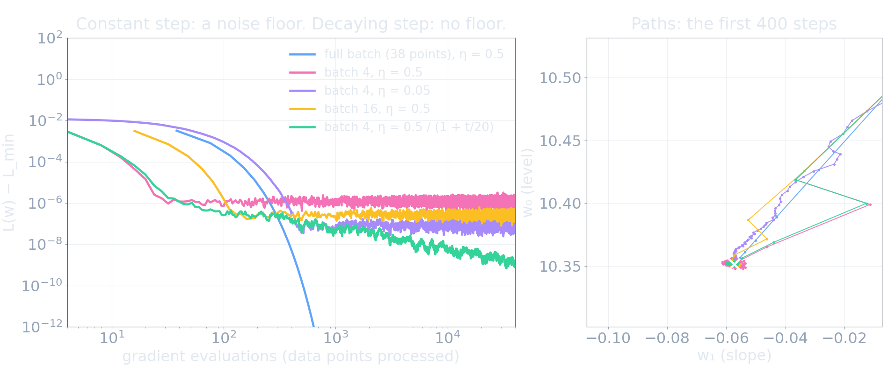
The real background fit with standardised features (38 channels, κ = 1). Left: the distance to the minimum against the number of processed data points, mean of 20 runs. Right: the paths of one run.
Constant step: SGD stops at a floor ∝ η / batch size. A decaying step removes the floor.
Checkpoint: the fit does not converge. Why?
| What the loss curve does | Likely cause | First cure |
|---|---|---|
| grows or oscillates | \(\eta\) above \(2/\lambda_{\max}\) | divide \(\eta\) by 3 to 10 |
| fast drop, then a long flat tail | ill-conditioned: large \(\kappa\) | standardise; then momentum or Adam |
| falls, then rattles at one level | noise floor of SGD | decay \(\eta\), or use a larger batch |
| flat from the first step | plateau or wrong input scale | better start; check the units of the inputs |
| a different answer for each start | non-convex loss | several starts; coarse-to-fine |
Plot the loss curve on a log axis. It tells you which of the five you have.
Act 4 · Generalise
Why does the best fit predict badly?
A linear model is linear in the weights, not in x
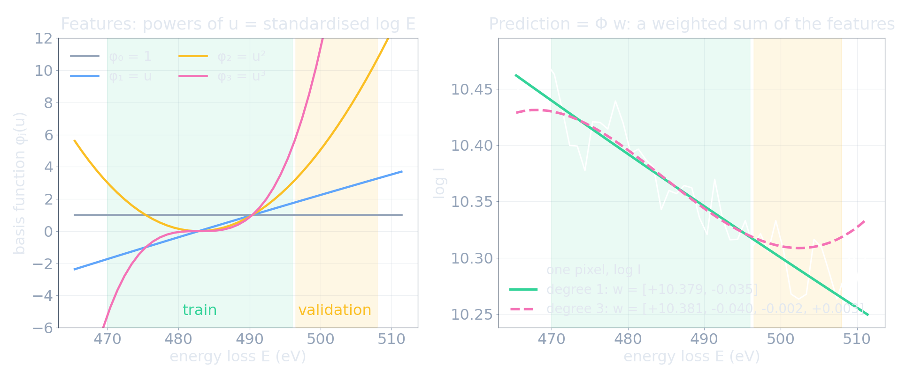
Left: four basis functions, the powers of the standardised log E. Right: one real pixel with the fits of degree 1 and degree 3. Train window green, validation window yellow.
\(\hat y=\sum_j w_j\,\varphi_j(x)=\boldsymbol\Phi\,\mathbf w\). The features \(\varphi_j\) are fixed functions: powers, reference spectra, line patterns. The number of features is the complexity.
More parameters always fit better, and predict worse
Bias² + variance, measured on 30 real pixels
More data lowers the variance, not the bias
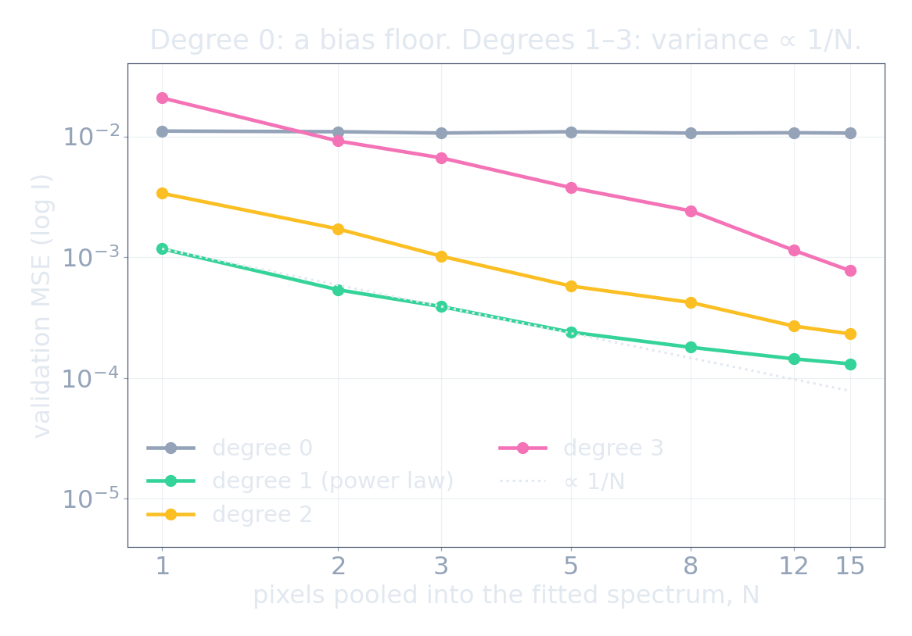
- Degree 0: 1.1·10⁻² for every N. This is bias. More data does not help.
- Degree 1: 1.2·10⁻³ → 1.3·10⁻⁴ from N = 1 to 15. This is variance, ∝ 1/N.
- Degree 3: with 1 pixel, worse than a constant. With 15 pixels, 14× better than a constant.
The best complexity grows with the amount of data. The power law wins at every N: correct physics costs no variance.
Checkpoint: read the two errors
| Training error | Validation error | Diagnosis | Cure | |
|---|---|---|---|---|
| A | high | high, close to training | high bias: underfit | richer model, better features |
| B | very low | much higher | high variance: overfit | more data, simpler model, regularise |
| C | low | low, close to training | good fit | stop; test once |
| D | low | lower than training | suspicious | check the split: too small, too easy, or leaky |
Background fit of one pixel: which degree is A, which is B, which is C?
Act 5 · Regularise
How do we tame the variance?
Ridge: collinear standards make the coefficients lie
Lasso: which elements are in this spectrum?
The geometry: ridge shrinks, lasso selects
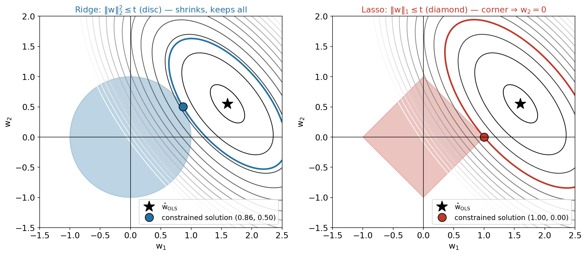
Ridge: \(\min_{\mathbf w}\|\mathbf y-\mathbf X\mathbf w\|^2+\lambda\|\mathbf w\|_2^2\)
\(\Rightarrow\;\hat{\mathbf w}=(\mathbf X^T\mathbf X+\lambda\mathbf I)^{-1}\mathbf X^T\mathbf y\): shrinks every weight.
Lasso: \(\min_{\mathbf w}\|\mathbf y-\mathbf X\mathbf w\|^2+\lambda\|\mathbf w\|_1\)
No closed form; exact zeros: selects features.
λ: standardise first; choose λ by (grouped) cross-validation, never on the test set.
Every regulariser is a prior
1 Bayes: \(p(\mathbf w\mid\text{data})\propto\) \(p(\text{data}\mid\mathbf w)\,p(\mathbf w)\)
2 MAP estimate: minimise \(-\log p(\text{data}\mid\mathbf w)\) \(-\log p(\mathbf w)\) = loss + penalty
3 Gaussian prior \(w_j\sim\mathcal N(0,\tau^2)\): penalty \(\tfrac{1}{2\tau^2}\|\mathbf w\|_2^2\) → ridge with \(\lambda=\sigma^2/\tau^2\)
4 Laplace prior \(p(w_j)\propto e^{-|w_j|/b}\): penalty \(\tfrac1b\|\mathbf w\|_1\) → lasso
Act 1: the noise model chooses the loss. Act 5: the belief about the weights chooses the penalty.
λ is a hyperparameter: the validation curve chooses it
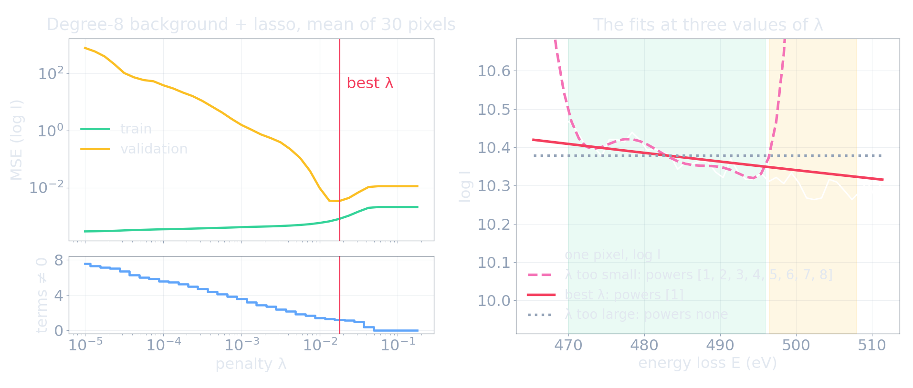
Real pre-edge spectra, a degree-8 polynomial background with a lasso penalty. Left: training and validation error and the number of non-zero terms against λ. Right: three fits of one pixel.
Too small λ: variance. Too large λ: bias. At the best λ, lasso keeps one term of eight: the power law.
Regularisation is more than a penalty
| Regulariser | What it restricts | EM example |
|---|---|---|
| Fewer parameters | the model class | a power law in place of a degree-8 polynomial |
| Physical constraints | the sign or the range of the weights | non-negative weights in EDS and NMF (Week 3) |
| Ridge, lasso | the size or the number of the weights | collinear Fe standards; element selection |
| Early stopping | the distance from the start | stop when the validation loss rises (Week 6) |
| Pooling, more data | the variance directly | bin pixels, sum frames |
| Augmentation | the response to known symmetries | rotated and flipped crops (Week 8) |
All of them reduce the variance. All of them add an assumption. Say which one you used.
Act 6 · Validate
Is the score honest?
Train, validate, test: and what kind of new?
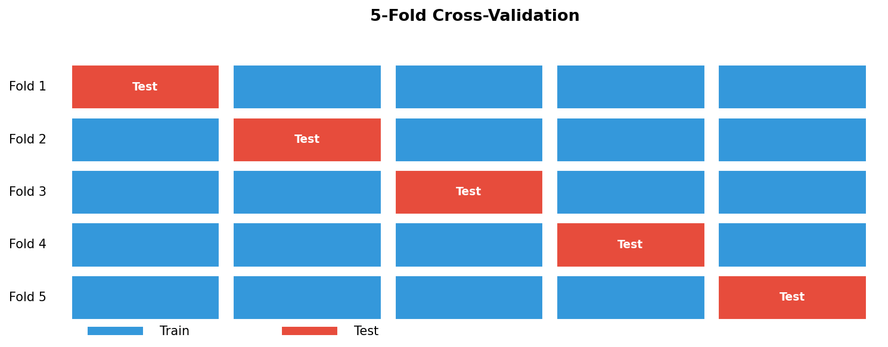
| Deployment claim | Split |
|---|---|
| new pixel of a known image | random K-fold |
| new image / crop region | GroupKFold by image |
| new specimen | GroupKFold by specimen |
| later session / drift | chronological split |
| other microscope | leave-one-instrument-out |
Train: fit the weights. Validation (or CV): choose λ, degree, model. Test: report once.
Random pixels or new specimens: the same model, R² 0.50 or −0.12
Look inside the score: the error for each specimen
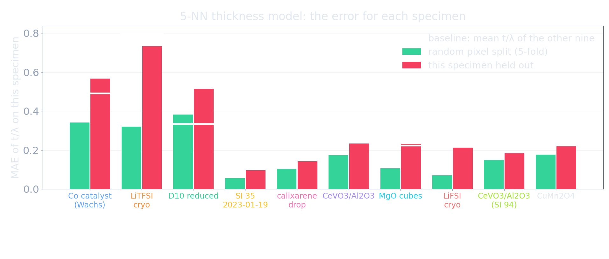
The same 5-NN model. Green: the MAE on the pixels of this specimen in a random 5-fold split. Red: the MAE when this specimen is held out. White: a baseline that predicts the mean t/λ of the other nine specimens.
One pooled number hides ten different answers. Three specimens have an error of 0.5 to 0.7 in t/λ.
One split is one draw: a score needs a spread
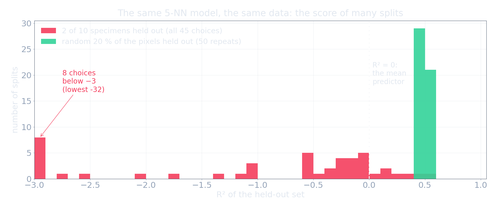
The same model and data. Green: 50 random hold-outs of 20 % of the pixels. Red: all 45 ways to hold out two of the ten specimens.
Random split: R² = 0.50 ± 0.03, precise and wrong. New specimens: from −32 to +0.57. The spread is the result.
Learning curves: more pixels, or more specimens?
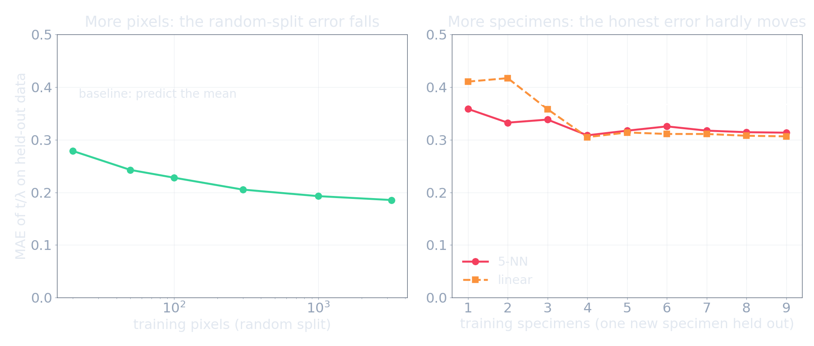
Left: the error on random held-out pixels against the number of training pixels. Right: the error on a new specimen against the number of training specimens. Dashed: the baseline that predicts the mean.
4 000 pixels are ten data points. The error on new specimens is flat after four specimens: this is bias, not too little data.
Preprocessing leakage: R² = 0.4 on pure noise
Four kinds of leakage, one cure
| Leakage | EM example | Cure |
|---|---|---|
| Duplicate | overlapping crops, repeated frames, augmented copies in both sets | split before cropping or augmenting |
| Group | pixels / crops of one specimen in train and test | GroupKFold(groups=specimen_id) |
| Temporal | random split of a drift series or in-situ movie | chronological split, gap between sets |
| Preprocessing | scaler, PCA, feature selection fitted on all data | every learned step inside a Pipeline |
Spot the leak
Two minutes, in pairs. Each pipeline has a leak. Name its type and the cure.
- 512 crops from 8 micrographs; a random 80/20 split of the crops. → Group. Split by micrograph.
- PCA denoising on all EELS spectra; then 5-fold CV of a classifier. → Preprocessing. PCA inside the fold.
- An in-situ heating series; the frames are shuffled into 5 folds. → Temporal. Train on early frames, test on late frames.
- Augment the images with rotations and flips; then split. → Duplicate. Split first, augment the training set only.
- Try 30 models; report the one with the best test score. → The test set became a validation set. Next slide.
Nested cross-validation: choose inside, report outside
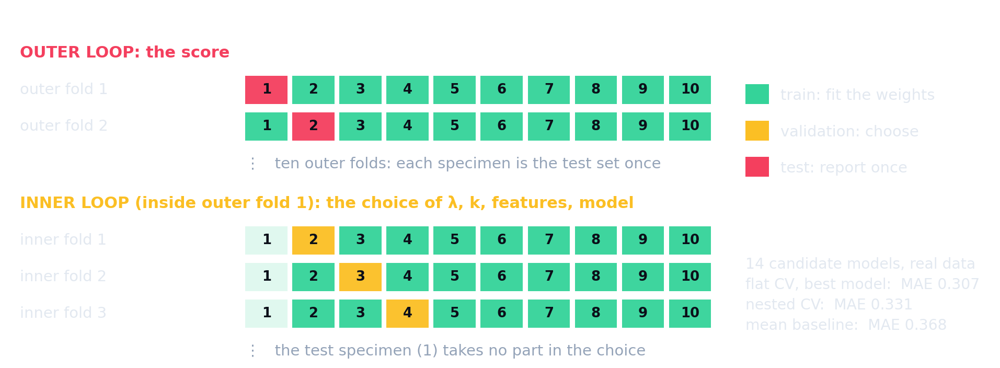
Ten specimens. The outer loop holds out one specimen for the score. The inner loop chooses the model with the other nine.
Each number belongs to a claim, and needs a baseline
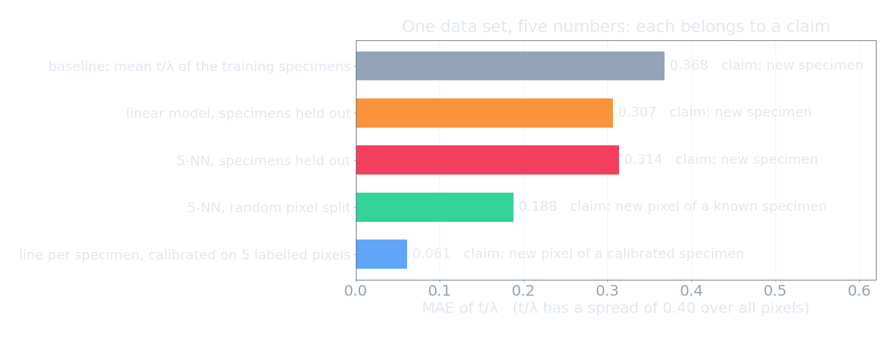
Five numbers from the same ten specimens. Mean absolute error of t/λ; lower is better.
No number here is false. Each one answers another question. Write the claim next to the number.
Regression metrics: say the error in units
| Metric | Definition | 5-NN, random split | 5-NN, new specimen | Mean baseline |
|---|---|---|---|---|
| MAE | mean of \(\lvert r_i\rvert\) | 0.19 | 0.31 | 0.37 |
| RMSE | \(\sqrt{\text{mean of } r_i^2}\) | 0.28 | 0.43 | 0.44 |
| R² | \(1-\dfrac{\sum r_i^2}{\sum (y_i-\bar y)^2}\) | 0.50 | −0.13 | −0.18 |
- MAE and RMSE have the units of \(y\) (here t/λ). RMSE counts large errors more: RMSE ≫ MAE means a few large errors.
- R² compares with the mean of the test data. R² < 0: worse than that mean.
- R² depends on the spread of the test set. Specimen “D10 reduced”: MAE 0.51, R² = −168.
Classification and segmentation metrics
| Predicted: background | Predicted: defect | |
|---|---|---|
| True: background | TN = 9 700 | FP = 100 |
| True: defect | FN = 50 | TP = 150 |
An image with 10 000 pixels, 2 % defect pixels.
- Accuracy = (TP + TN) / all = 98.5 %. “Always background”: 98.0 %.
- Precision = TP / (TP + FP) = 0.60. How clean are the detections?
- Recall = TP / (TP + FN) = 0.75. How complete?
- F1 = Dice = 2PR / (P + R) = 0.67
- IoU = TP / (TP + FP + FN) = 0.50
Rare objects: accuracy says nothing. Report precision and recall, or Dice or IoU.
Read coefficients with care
A coefficient is conditional: “with the other features fixed”. For collinear features, only the sum is fixed by the data (Fe⁰ and Fe²⁺, Act 5).
A coefficient has units: a small weight on a large feature is not a small effect. Compare standardised weights.
A coefficient has a spread: refit on bootstrap samples or on the CV folds. A sign that changes is not a finding.
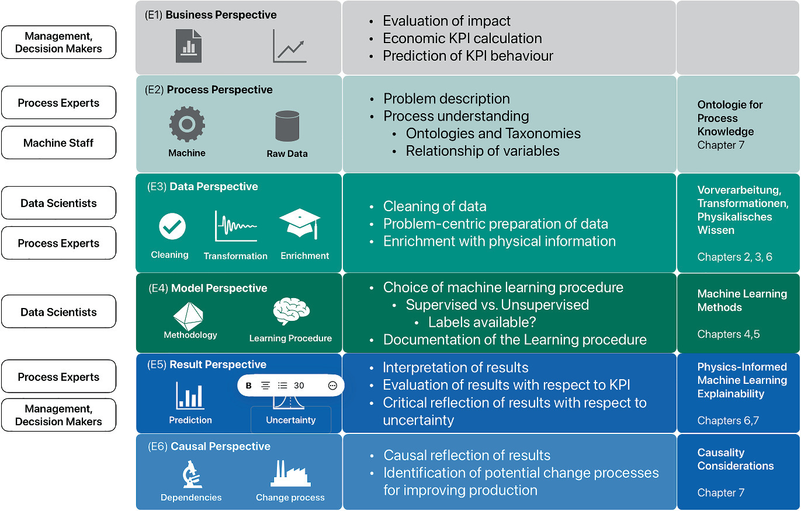
The honest-result checklist
- Claim: write “the model predicts ___ for a new ___” (pixel, image, specimen, session, microscope).
- Split by that unit. Record
specimen_id, session and time at acquisition. - Pipeline: every step that learns from data is inside the fold.
- Choose λ, k, features and the model inside the training data.
- Report MAE or RMSE in units, the spread over the folds, the number of groups, and a baseline.
- Look at the worst group and at the residuals, not only at the mean.
- Test once.
Use this list for the miniproject report, and when you review a paper.
The red line, complete
Must-know for the exam
1 Loss = −log p(noise): MSE ↔︎ Gaussian, MAE ↔︎ Laplace, Huber = Gaussian core + outliers (IRLS).
2 GD: w ← w − η∇R. Stable for η < 2/λ_max; about κ steps. Standardise the features.
3 Convex ⇒ every local minimum is global. Linear model + MSE/MAE/Huber/ridge/lasso: convex.
4 SGD: cheap, noisy, unbiased. Momentum averages gradients; Adam scales each parameter.
5 Expected error = bias² + variance + noise. Training error always falls with complexity.
6 Ridge (L2 disc) shrinks and fixes ill-conditioning; lasso (L1 diamond) gives exact zeros.
7 The split must match the claim: GroupKFold by specimen; chronological for time series.
8 Leakage: duplicate, group, temporal, preprocessing. Every learned step goes inside the fold.
Self-study this week
Notebook (molab): notebooks/unit04_regression_validation.py: “Regression, optimisation and honest validation on real EM data”
- Parts 1–3: a Huber lattice fit by IRLS on real 4D-STEM disks; the noise model of 21 000 residuals; gradient descent, κ, momentum and Adam on the real background fit.
- Parts 4–5: train versus validation and bias² + variance on 30 real pixels; ridge on collinear Fe standards; lasso selects EDS elements (⭐).
- Part 6: random versus grouped CV on ten specimens; preprocessing leakage on pure noise; name the split.
Ten exercises with automatic checks; CPU only, NumPy and Matplotlib. Sign in to molab → Fork → your own copy.

- Data sets (CC BY 4.0): STEM-Bank-26 Hollyer, George et al., (2026), doi:10.48550/arXiv.2610.36086; Cymes et al. Cymes, Brittany A. et al., (2023), doi:10.1111/maps.13941; Mills et al. 4D-STEM Mills, Sean H. et al., (2023), doi:10.1016/j.actamat.2023.118721.
- Extra:
week04_leakage_demo.ipynb(synthetic). - Must-know review: exam_mustknow.md, Week 4.
- Miniproject: Pipeline + GroupKFold template.
Next week: from images to features: descriptors & tree ensembles
Today’s linear model becomes the baseline. Next week: descriptors from EM images, and trees that must beat the baseline under the same grouped validation.
- From images to tabular descriptors: particle and grain properties, atom-column environments.
- Decision trees, random forests, gradient boosting: non-linear models for tabular data.
- Explainability, next rung: permutation importance and SHAP, and why today’s collinearity warning applies to them too.
Continue
Backup slides
Material outside the 90-minute path, for questions and self-study.
Optimiser comparison
| Optimiser | Cost per step | Adaptive η? | Momentum? | Typical use |
|---|---|---|---|---|
| Full-batch GD | \(\mathcal O(N)\) | no | no | small convex problems |
| Minibatch SGD | \(\mathcal O(b)\) | no | optional | large data |
| SGD + momentum | \(\mathcal O(b)\) | no | yes (\(\beta\approx0.9\)) | vision models, fine-tuning |
| Adam | \(\mathcal O(b)\) | per parameter | yes | default for most EM projects |
Collinearity: a synthetic bootstrap
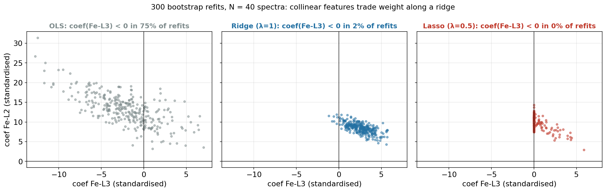
300 bootstrap refits on synthetic EELS windows (Fe-L₃ and Fe-L₂ nearly collinear). OLS coefficients slide along a line; ridge stabilises them; lasso keeps one of the pair at random.
References

©Philipp Pelz - FAU Erlangen-Nürnberg - Data Science for Electron Microscopy